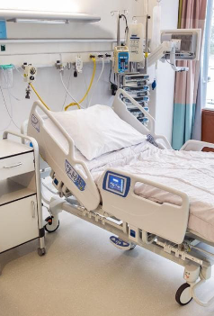
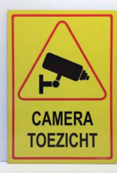
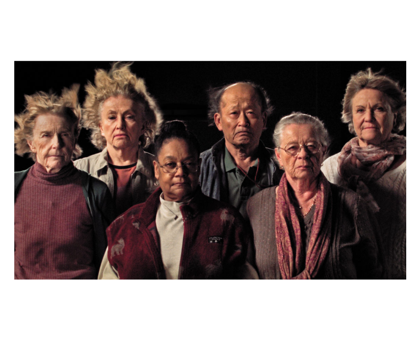
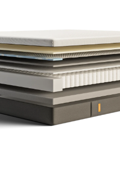
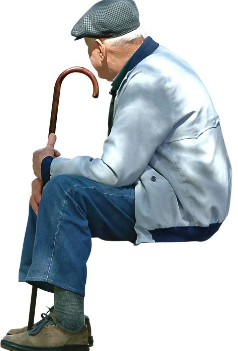
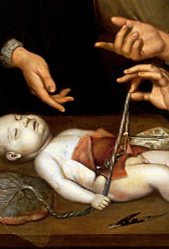
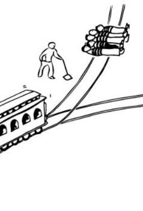

Ethiek en Human Centered Design


De 8 best geteste ontwerpen
De beste producten ontworpen met Human Centered Design .
Ziekenhuis bedden krijgen een functioneler ontwerp
Er wordt gewerkt aan meer comfort voor patiënt en personeel.
Egoïstisch of altruïstisch?
De afgelopen weken hebben we onze lezers verschillende dilemma’s voorgelegd over corona en de vaccins.
Hoe krijgen burgers een stem bij nieuwe technologie?
Hoofdredacteur Leon Heuts legt uit wat de Catalyst-methode is en roept op om mee te doen.

Deelnemers bizar experiment ontmoeten elkaar weer na 43 jaar.
Deelnemers blikken terug op een van de meest bizarre experimenten ooit.
20 min. read



Matrassen meest geteste producten ooit
Het matras is het meest vooraf geteste product ooit.
Ethische reflectie op een simpel prikje
Een hielprik lijkt een ingreep van ‘weinig moeite, veel plezier’.
Nieuwe ouderen wijk
De nieuwe woningwijk in Purmerend is speciaal gedesign met en door ouderen.
Proeven met mensen
Van ‘vrijwillige’ toestemming was bij de meeste experimenten vóór 1900 geen sprake, en zeker niet in de betekenis die nu aan die term wordt gegeven.
